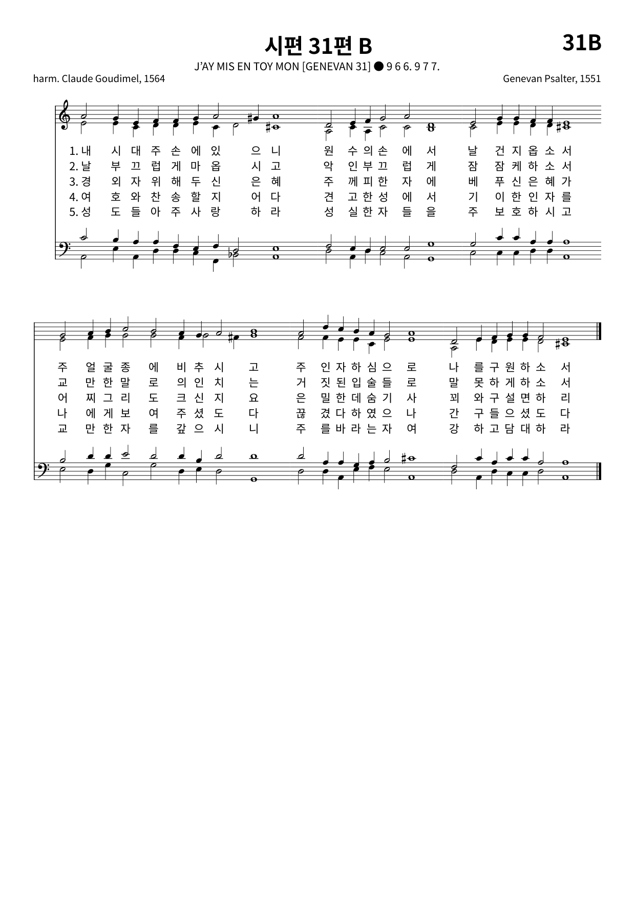

Psalm 31B
J’AY MIS EN TOY MON [GENEVAN 31] · 9 6 6. 9 7 7.
English title: In Thee, O LORD, I’ve Taken Refuge
Tune: Genevan Psalter, 1551 · Harmony: Claude Goudimel, 1564 · Lyrics: Korean adaptation of Psalm 31 from the Korean Revised Version (AI draft adaptation · not yet theologically reviewed) · 5 stanzas
Psalm 31 is divided into 2 tunes: A B · This tune contains stanzas 8–12 of the Psalm 31 lyrics.
Score PDF MusicXML (for printing) MusicXML (for accompaniment, with prelude and repeats) Read Psalm 31 (Korean Revised Version)
Score
← Psalm 31A ListAccompaniment (in preparation)Psalm 32 →
Lyrics (Korean)
Stanza 1
내 시대 주 손에 있으니
원수의 손에서
날 건지옵소서
주 얼굴 종에 비추시고
주 인자하심으로
나를 구원하소서
내 시대 주 손에 있으니
원수의 손에서
날 건지옵소서
주 얼굴 종에 비추시고
주 인자하심으로
나를 구원하소서
Stanza 2
날 부끄럽게 마옵시고
악인 부끄럽게
잠잠케 하소서
교만한 말로 의인 치는
거짓된 입술들로
말 못하게 하소서
날 부끄럽게 마옵시고
악인 부끄럽게
잠잠케 하소서
교만한 말로 의인 치는
거짓된 입술들로
말 못하게 하소서
Stanza 3
경외자 위해 두신 은혜
주께 피한 자에
베푸신 은혜가
어찌 그리도 크신지요
은밀한 데 숨기사
꾀와 구설 면하리
경외자 위해 두신 은혜
주께 피한 자에
베푸신 은혜가
어찌 그리도 크신지요
은밀한 데 숨기사
꾀와 구설 면하리
Stanza 4
여호와 찬송할지어다
견고한 성에서
기이한 인자를
나에게 보여 주셨도다
끊겼다 하였으나
간구 들으셨도다
여호와 찬송할지어다
견고한 성에서
기이한 인자를
나에게 보여 주셨도다
끊겼다 하였으나
간구 들으셨도다
Stanza 5
성도들아 주 사랑하라
성실한 자들을
주 보호하시고
교만한 자를 갚으시니
주를 바라는 자여
강하고 담대하라
성도들아 주 사랑하라
성실한 자들을
주 보호하시고
교만한 자를 갚으시니
주를 바라는 자여
강하고 담대하라